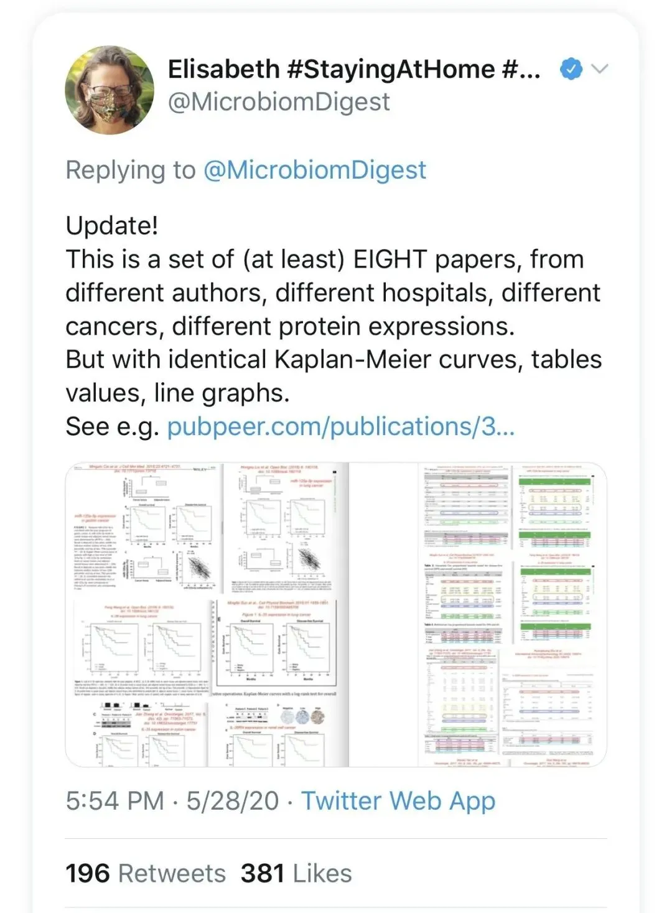
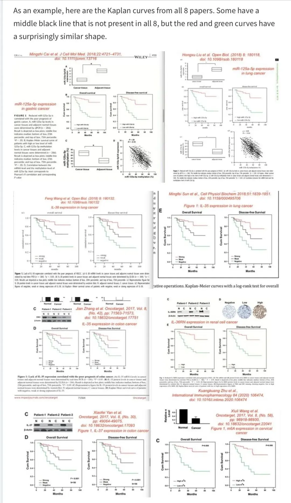
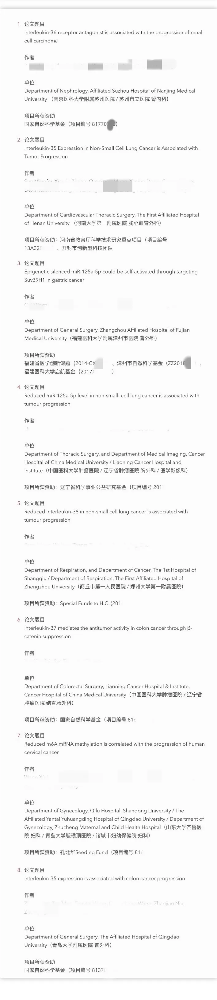
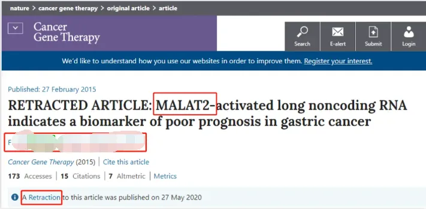
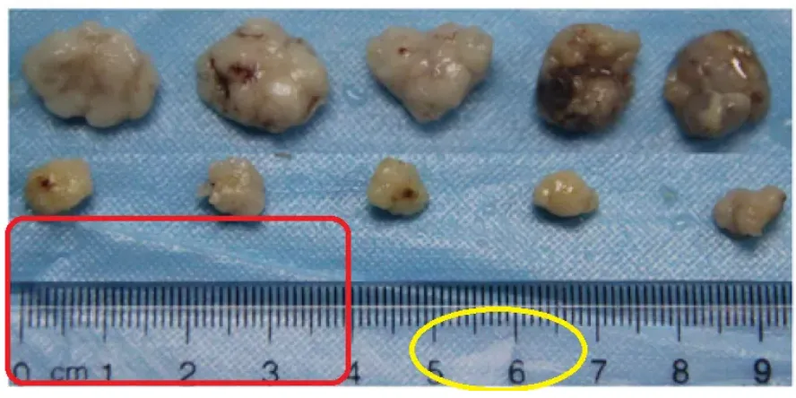
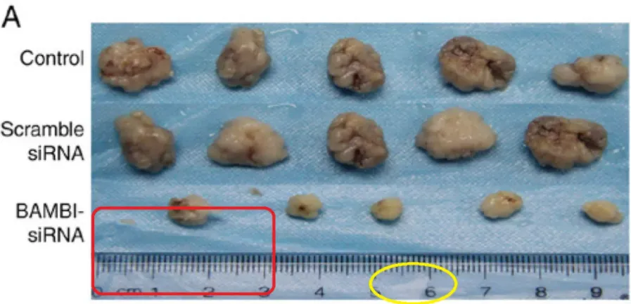
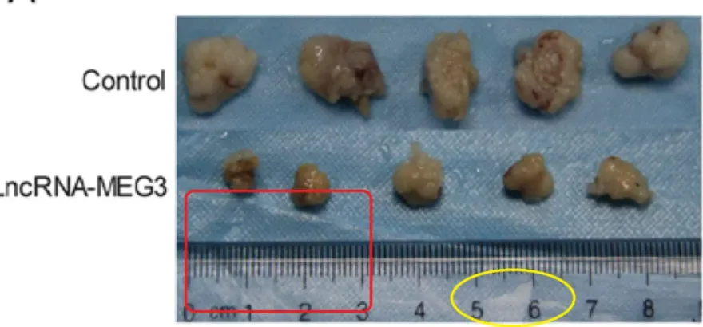
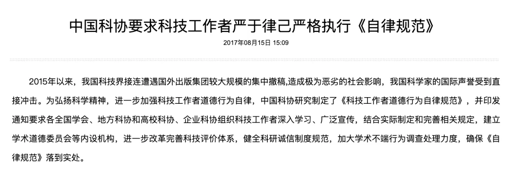

刷新论文造假新高度：8篇论文，不同单位、不同作者、结果却一模一样！
原文：https://mp.weixin.qq.com/s?__biz=MzAwMzIzOTk5OQ==&mid=2247521003&idx=1&sn=8f19e97edc799a708b99eeae7020a0ac&chksm=9b3cebbbac4b62adc6f70d52ce155594eebc6cbd1368ca7e08b76598c9650ed12b0149f22439#rd 合集：漫谈胡侃
对于学术造假，真的有很多操作让人“叹为观止”。
pubpeer爆料过这样一件事，发现8篇论文，不同作者，不同医院，不同癌症种类，不同蛋白表达，愣是完全一样的结果，居然发了8篇论文！
而从文章署名来看，从一线医生到主任副主任医师、医院副院长，还有多篇是国家自然科学基金资助 ，相信此次事件将再次刷新学术论文造假新高度！



而值得注意的是，近年来，这种“令人窒息”的操作在学术界并不少见。
除了论文撞衫外，还有人靠不存在的基因，写了学位论文顺利毕业，还发了篇SCI...
这种风险小，收益大的学术造假，也引起不少科研人的热议。
叹为观止的论文造假
操纵作者身份、涉嫌伪造评审专家以及图片造假。近几年，类似论文造假层出不穷。
胆小的还在想怎么降低查重率，胆大的已经开始自己编材料了。
上海交大医学院的一位硕士生，用一个根本不存在的基因MALAT2（其实只有MALAT1），发了一篇SCI，还以此完成了上海交大硕士学位论文，顺利毕业。

更好笑的是，文章在发表了5年后，才被杂志撤稿 ，理由是担心文章所描述的MALAT2基因并不存在。
而发表后的同行评议证实了这一点：只有一种被称为MALAT1的基因。因为文章研究的是一个不存在的基因，所以，主编撤稿了！
这也让不少人直呼荒唐，2020年12月，上海交通大学撤销了文章作者田某的硕士学位。
但此时，距离其毕业已经过去了5年，这5年田某靠着硕士学位所获得的利益该如何处理，此事没有了下文。
风险小，收益大，也让无数学者开始铤而走险的试探学术不端的红线。
比如著名的“11篇不同高校论文中竟出现同一块桌布”的论文撞衫事件。作者涉及单位甚至有同济大学、武汉大学、兰州大学、中国医科大学等多所知名高校！
2021年6月8日，陕西中医药大学朱某在2018年于Bioscience Reports发表的论文被撤回，主要原因是该文章的实验样品，标尺及桌布在其他多达10篇文章出现重复使用。

陕西中医药大学，Bioscience Reports ，图7A（已撤稿）

武汉大学，ONCOLOGY LETTERS ，图4A（已撤稿）

郑州大学，International Journal of Oncology ，图6A（已撤稿）
............
这些论文显然逃不开典型的“论文工厂造假”案。但等文章被发现撤稿时，已经距离发表过去了3年，尽管撤稿了，但因为这几篇论文所获得的荣誉和好处，却并没有人去追责。
论文工厂生产的论文不同于以往简单的论文抄袭造假，如果没有在进行初审时多多留心工厂的流水线作品的既定套路，这类论文被顺利送审的可能性是很大的。
很多学者认为，论文造假行为涉及到学术不端和学术不诚信，这是学术界所不能容忍的行为。如果造假者通过造假获得了利益，比如获得了学位、职称、荣誉、经费等，这些都是不正当的利益，应该被追回和撤销，以维护学术秩序和社会公正。
但现实中，很多处罚也仅仅止步于撤稿。不过可以确定的是，近几年，对学术不端的处罚有在渐渐收紧。
2017 年，中国科协要求科技工作者严于律己严格执行《自律规范》。

图片来源：中国科协
2020年5月19日，国务院新闻办公室举行的新闻发布会上，科技部副秘书长贺德方说，对于确实存在严重学术不端的违规人员，其不当获得的所有荣誉和利益，包括学位、职称、人才称号、各种奖励奖金，都要全部清退归零。 就是要让守信者“一路绿灯”，失信者处处受限。广大的科研人员要恪守科研规范，珍惜学术声誉，管好自己的团队和学生。
恪守科研规范，珍惜学术声誉，广大的科研人员要学会爱惜自己的学术羽毛。切勿触碰学术不端的红线！
本文来源：Retraction Watch、募格学术此前报道、科研大匠等****
版权声明：版权归原作者所有，文章仅做学术分享使用，若涉及侵权，请第一时间联系小编 删除，万分感谢！

如何联系我们

 公众号后台消息回复不便，这里给大家留一下领取资料及免费服务器(足够支持你完成硕博生涯的生信环境)的微信号 ，方便各位随时交流、提建议（别问在么，添加时直接说来意）。此外呼声一直很高的交流群 也建好了，欢迎大家入群讨论：
公众号后台消息回复不便，这里给大家留一下领取资料及免费服务器(足够支持你完成硕博生涯的生信环境)的微信号 ，方便各位随时交流、提建议（别问在么，添加时直接说来意）。此外呼声一直很高的交流群 也建好了，欢迎大家入群讨论：
大家可以阅读完这几篇之后添加给生信入门初学者的小贴士 如何搜索公众号过往发布内容

 您点的每个赞和在看，我都认真当成了喜欢
您点的每个赞和在看，我都认真当成了喜欢